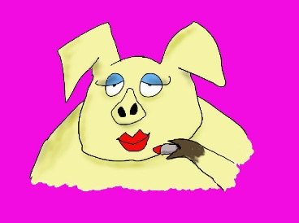

--Alan Watts
I’m smarter than you.
Maybe not younger, sweeter, or better looking than you, but definitely smarter.
Although, put me next to a 175 IQ genius, and maybe I'm not even that smart either.
Ah comparisons. Don't you love them?
Yeah maybe not.
Comparing is one of those no-no's we’re never supposed to do. Not ever.
Everyone knows comparing is bad.
Yet everyone does it.
A lot.
Because no-no or not, liked or not, we actually need comparison.
It's a key way the mind identifies the individual self.
Though there’s no unmoving self-stake in the ground where we’re always the best, always the funniest, always the wisest, no matter what is happening or who else is there. We might arrive at the party feeling like hot stuff but all it takes is someone hotter to walk in and boom, down to the bottom of the pile we go.
The self is movable. It changes depending on context.
That thing is whimsical. Downright flimsy.
So naturally we try to make it more solid, more fixed.
Comparing shows us where we stand in the scheme of things. “I’m better than those fools, nowhere near as good as that genius. I'm not as good as that one, not as bad as that..."
Got it!
Located. Placed.
Here I am!
Comparison is the GPS of the self. It literally evaluates the landscape and tells us where we are.
The target moves though, so the map has to be continuously checked and re-checked.
There’s no let-up. It can’t be turned off.
Because without a location, where exactly are we?
Plus, most of the time we come up on the low end, the losing end, of the comparing scale. Since no matter how great we are, there’s always someone cuter, more successful, more evolved.
Deficiency can be counted on.
I mean, we might be enlightened but we're no Ramana.
Which means, just for extra fun, a good helping of misery piles on, making it feel pretty crappy to be such a comparative loser.
That pain adds to the sense of solidity of the self.
So to increase the feeling-bad and the solidness, we keep our own lack and inadequacy front and center. "I'm the dumbest person here. Other people don't make these stupid errors."
We become laser-focused on all possible shortcomings and brush aside any compliments or accidental notions of superiority.
Which is why those rare positive self-evaluations, “Hey I did. something nice. I’m a good person!” soon devolve into something like, “Hey don’t go thinking too much of yourself! Who do you think you are?”
(Always a good question. Who DO you think you are?)
Of course none of this is seen or admitted. We're not about to broadcast that we're a hologram.
No, appearances must be kept up. We'll pretend we’re clever and confidant while standing next to a 17-year old tech start-up wizard. We'll pretend we like what we look like, or that life is actually as good as our carefully constructed presentations are made to appear on Facebook.
Basically every one of us is putting lipstick on a pig and praying nobody realizes.
Especially not the pig.
So when everyone says, "Stop comparing..." Well, that's a lovely dream, but it can’t be done.
Enlightened or not, the self must be located.
We have to at least pretend that we know where it is.
Otherwise how do we function in this world? How do we tie our shoes, feed our babies, get out of bed to pee?
Luckily accepting the inevitability of self-location is much easier than trying to stop comparisons.
Because they can't be stopped.
This is the game here. Charades is as good a game as any.
May as well keep the lipstick handy and enjoy making up all the possible presentations.
So many options! So many colors!
Some on the lips. Some on the teeth.
All equally helpful for providing a Me to point to.
A solid Me. A Me who’s right here.
A Me who, after carefully scanning the room,
Confirms it most definitely exists
and is present
And for sure is wearing the very best lipstick
there.
“Things are as they are. Looking out into the universe at night, we make no comparisons between right and wrong stars, nor between well and badly arranged constellations.”
--Alan Watts
“The real being, with no status, is always going in and out through the doors of your face.”
--Zen Master Lin Chi
